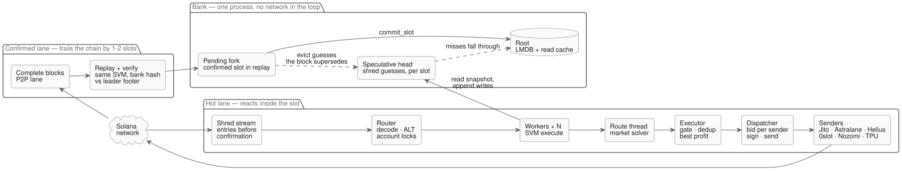
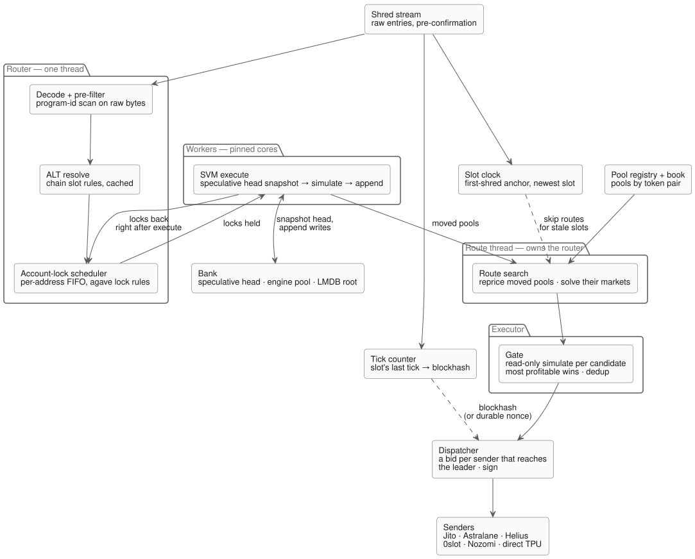
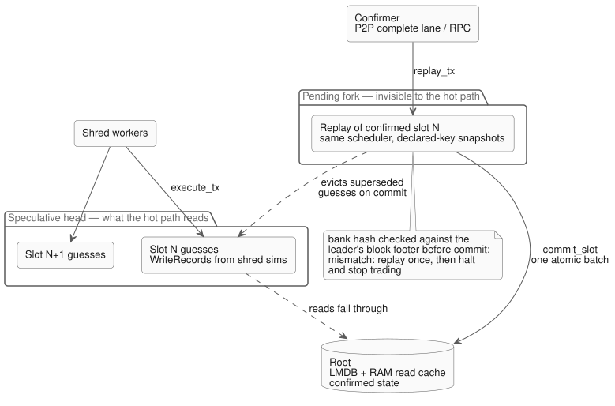
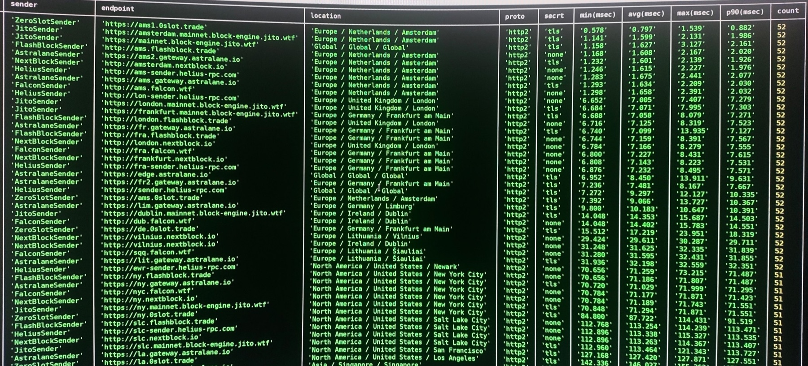

Reacting to Solana transactions before the chain has confirmed them — a private SVM bank fed straight from the shred stream
Rust · solana-svm internals · LMDB · custom thread pipeline · 2026 — the third major version of the arb system, private repo
What it is
???? is a Solana state machine that does not wait for the chain. It consumes the raw shred stream — the pre-confirmation transaction data validators gossip to each other — decodes every transaction, simulates it in an embedded SVM against a speculative copy of chain state, and reacts to the result. By the time a swap is confirmed on chain, Lumen has already priced what it did to the pool and, if that opened an opportunity, sent its own transaction.
The first two versions of this system read prices from an indexer and simulated through an API. Lumen replaces all of that with a bank: an LMDB-backed accounts database with a real solana-svm execution engine on top, so the whole loop — ingest, simulate, price, gate, sign, send — happens in one process, and nothing between a shred arriving and a transaction leaving waits on a server.
The whole system on one page
One loop and one lag. The hot lane takes a transaction off the shred stream and, inside the same slot, simulates it, finds a route, gates it and sends its own transaction back to the network — everything in one process, nothing on that path talks to a server. The confirmed lane trails the chain by a slot or two: complete blocks are replayed through the same SVM, checked against the bank hash the leader published for them, and only then promoted to disk. The bank in the middle is what joins them — the hot lane reads and writes its speculative head, the confirmed lane writes its root and evicts the guesses each block supersedes.
Not drawn: boot (an agave snapshot ingested straight into LMDB, DEX pools discovered into a registry) and observability (a histogram per stage into Prometheus, a liveness watchdog per worker).

How a shred becomes a transaction
The hot path is hand-built threads and channels, not an async runtime: a router thread, workers pinned to their own cores, a route thread, an executor and a dispatcher. Every stage has a histogram.

Router. Scans raw bytes for tracked program IDs before deserialising anything, resolves address-lookup tables with the chain's own slot rules (a table extended in this slot is not visible yet; a deactivated one is gone after its cooldown), and classifies each transaction's writable and readonly accounts.
Account-lock scheduler. The piece I am most careful about. Two workers simulating two swaps on the same pool from the same snapshot would silently corrupt the state everything downstream prices against. So transactions are dispatched only once their account locks are free, with per-address FIFO queues in the shape of agave's own unified-scheduler: conflicting transactions run strictly in arrival order and each sees its predecessor's writes; independent ones run in parallel; every scheduling event costs O(accounts of one transaction), not O(queue depth).
Workers. Run the transaction through the SVM against the speculative head, append its writes, hand the locks back, and tell the route thread which pools moved.
Route thread. One thread owns the router. It reprices every pool a transaction moved, then solves each market the move touched — the pair itself, or a triangle through one more token — as a single optimisation, so a route can split its input across several pools. The plan comes back in the integer amounts the on-chain program will execute, priced with each DEX's own integer math.
Executor and dispatcher. Every candidate is simulated read-only as the whole transaction before it is trusted, and the most profitable one wins; a route sent a moment ago is not sent again. The compute-unit limit is what that simulation used plus 5%. The transaction is signed with the slot's blockhash, which is the hash of its last tick, read straight off the shred stream, or with a durable nonce (see Landing).
Two forks over one root
This is the part that took the longest to get right. The bank keeps confirmed state in LMDB and two layers on top of it, in the same shape as agave's bank forks:

The speculative head is what the hot path reads and writes: the guesses produced by simulating shreds, per slot, last writer wins.
The pending fork is a confirmed block being replayed by the confirmer, through the same scheduler and the same SVM. The hot path cannot see it. When the bank hash it arrives at matches the one the leader published, commit_slot promotes it to LMDB in one atomic batch and evicts the guesses it supersedes. If it does not match, the block is replayed once from scratch to rule out nondeterminism; a second mismatch stops replay and latches a halt on trading until restart — the bot never trades on state its own SVM disagrees with the chain about. A wrong guess therefore lives at most one confirmation lag, and disk is only ever written from deterministic replay of confirmed transactions.
Replay is verified against the chain the way a validator verifies itself: an accounts lt-hash folded per block, sealed into the agave bank hash, compared with the hash the leader puts in the block's footer (Alpenglow, SIMD-0326). Same-block program upgrades and lookup-table extensions stay invisible for one slot because the chain delays them — that came out of reading agave's loader rather than guessing.
How fast it is
Measured with cargo bench --bench svm_sim and cargo bench --bench route_solver on an Apple M1 Pro laptop (10 cores). Every swap runs on a real mainnet pool of its DEX with the program as deployed, through the sBPF interpreter — the JIT only exists for x86-64, so a production box runs them faster than this. The route search runs on synthetic markets of the given size.
Path
What runs
p50
p90
p99
Hot path
a Raydium V4 swap as the shred workers run it: snapshot the head, simulate, append
116 µs
127 µs
140 µs
Raydium V4 swap
sanitize → load → execute, 15 626 CU
101 µs
106 µs
151 µs
Meteora DLMM swap
the slowest DEX: 303 795 CU across its bins
1.40 ms
1.45 ms
1.55 ms
System transfer
the floor: SVM overhead with almost no BPF
4.5 µs
4.6 µs
5.5 µs
Scheduler
admit + dispatch + release, 30 accounts, 8 in flight
3.4 µs per transaction
Route search, pair
518 pools, the largest pair on mainnet
92 µs
95 µs
112 µs
Route search, triangle
518 + 8 + 518 pools, the slowest shape measured
3.0 ms
3.1 ms
3.1 ms
A swap costs about what its program spends in compute units: from 0.1 ms on Raydium V4 to 1.4 ms on Meteora DLMM, whose swap walks bins. The hot path costs about 15 µs over the bare Raydium swap: that is the speculative head around the same simulation. One bank goes from 9 606 to 50 505 swaps a second on eight threads, 5.3×; each thread takes its own SVM engine from a pool, so nothing is locked per transaction. On the routing side a move of the largest pair on mainnet is searched in under 0.1 ms; the expensive case is a triangle between two very deep pairs, about 3 ms. A WSOL–USDC move touches 14 343 triangles, and setting aside the ones with nothing to trade takes 87 µs.
Landing
Simulation is only half of it; the transaction still has to reach the leader first. ???? sends through several landing services at once. For each leader slot, every service that can reach that leader — Astralane only for Harmonic leaders, a direct TPU connection only for validators I have a deal with — makes its own bid, priced from how the most successful rival bot pays. With a pool of durable nonces each service gets its own copy of the transaction on the same nonce: they race, the first to land wins, and the nonce makes every other copy invalid and unpaid. The probe below sent the same transaction to every provider in every region.

Per-endpoint round-trip from the bot's box: Amsterdam providers answer in under a millisecond, Frankfurt and London in about seven, the US east coast in seventy.
![Benchmarks. One swap through the SVM by DEX, median and 99th percentile: Raydium V4 101 and 151 µs, Raydium V4 on the hot path 116 and 140 µs, Meteora DAMM v2 169 and 219 µs, Orca V2 252 and 307 µs, PumpSwap 638 and 767 µs, Orca Whirlpool 797 and 910 µs, Meteora DLMM 1.4 and 1.6 ms, a system transfer 4.5 and 5.5 µs. Swaps per second on one bank: 9 606 on one thread, 18 429 on two, 29 967 on four, 50 505 on eight. Route search after a pool moves, median: pair of 8 pools 3.8 µs, 64 pools 12 µs, 518 pools 92 µs; triangle of 8 + 2 + 8 pools 47 µs, 64 + 8 + 64 pools 413 µs, 518 + 8 + 518 pools 3.0 ms; screening the 14 343 triangles a WSOL–USDC move touches 87 µs.](img/projects/Lumen/bench/bench-dark.svg)